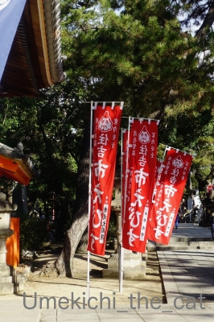
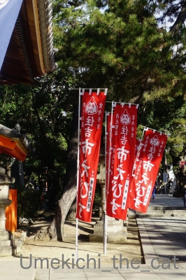
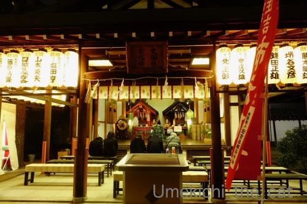
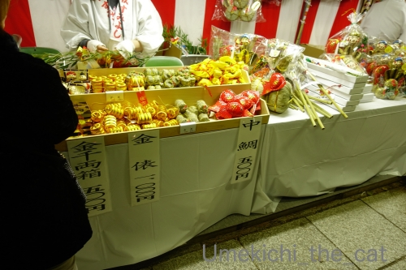
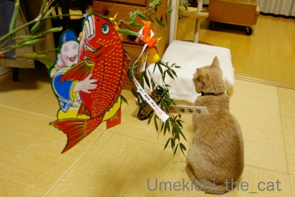
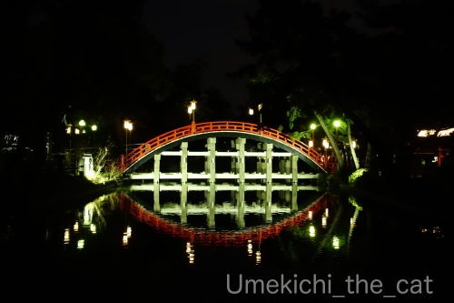

2020年のえべっさんもやっぱり宵えびすだよ！ [梅吉]
 
関西ではひょっとしたらお正月の初詣よりも重要な行事かも？と思われる「えべっさん」。
「えべっさん」とはえびす神社の例祭「十日戎」の通称です。
大阪の今宮戎神社には
9日宵えびす 、10日本えびす 、11日残り福の３日間で100万人もの人がお参りするのだとか。
2017年、2018年、2019年のえべっさんの記事です。
我が家は毎年近くの神社のえべっさんにお参りしています。

昼間、お買い物途中にのぞいたら結構な賑わい。
鯛の潮汁のお振る舞いがあったり餅まきがあったりするんですよね＾＾

我が家がお参りしたのは夕方になってから。
この時間になると混雑はなくのんびりした雰囲気の中で参拝できます。

ご祈祷中です。

福笹をいただいて縁起物をつけていただきました。
顔見知りになった感のある「福おばちゃん」0(≧▽≦)0今年もおまけしてくれました！
お兄さん達に縁起担ぎの大阪じめで手打ちをしていただいて・・・

最後はやっぱりこのお方！
でっかい招き猫さんの反応は・・・・・
（20秒です。環境音あり）
誘った感ありありですけどー。
今年もしっかり福をキャッチしていただけそうです！

夜の神社は雰囲気あります。

良い月も出ていましたよ。
長かったお正月休み（インフルエンザ休みとも言うw）。
寝込んでいた人の社会復帰のリハビリを兼ねてお気に入りのラーメン屋さんへ。
テクテク歩いて30分弱くらいかな。

ワンタン麺と
魚介担々麺。
この系列店は（親店が大阪市内我孫子にある）煮干出汁にこだわってます。
鶏がらスープが一番！と思っていた私ですがこのお店のラーメン食べて
「ニボラー」開眼しましたw
今回初めて食べた魚介スープの担々麺がまた美味しくってねー。
濃厚で大満足でした。次回は「痺れ増し」出来ますか？って聞いてみます＾＾
2020-01-12 16:09
nice!(80)
コメント(19)

カフェオレ色の梅吉

梅吉 2023年8月10日 永眠


梅吉と出会った譲渡会

犬猫の理由なき殺処分ゼロ
妄想広告
UMEKICHI 光

爆発的に早い！
時々攻撃的！
Thanks to Mr.Boss365
爆発的に早い！
時々攻撃的！
Thanks to Mr.Boss365

梅吉さん今年もしっかり福をキャッチしましたね。
ちぃおっと様も回復されたようで何よりです。
by zombiekong (2020-01-13 00:16)
縁起のいいところに
梅吉君の招きがあるとなれば鬼に金棒ですね！
らいむ、確かにウエットの方が食いつきが良いんですよ
でも今日は普通に食べていたから
遊びとか運動量の関係だったのかもしれません
by 藤並 香衣 (2020-01-13 01:02)
動画の最初の梅吉さんは笹が取れなくてちくしょうーってしてません(笑)
えべっさんは今宮戎が有名ですが住吉さんのほうが落ち着いた雰囲気でご利益ありそうですね(^^♪
そして３０分歩いて食べたラーメン美味しそう～
私もニボラー開眼したいです☆
by yamatonosuke (2020-01-13 01:58)
こんにちは。
今宮戎神社のえべっさん「100万人もの人がお参り」は驚きですね。
近くの神社のえべっさんあり、良い環境です。
「福おばちゃん」と顔見知り！！おまけまで・・・
流石、ちぃさん！！商売上手？人徳ですね（笑）
梅吉くん、手を舐めますね？福笹は滑るみたいですね。
ご主人、インフルエンザ休み？復活・帰還良かったですね。
かみなり中華そば！！お店の名前が気に入りました（笑）
「魚介担々麺」魚粉が喉に絡みそうですが・・・
美味しそう！！お腹が空いてきた！？(=^･ｪ･^=)
by Boss365 (2020-01-13 02:40)
リアルまねき猫＾＾
by ぽちの輔 (2020-01-13 06:07)
縁起物にじゃれつく梅吉さん♪
その後、お手々をなんかイヤそうにふるっているのがおかしいです。
触り心地が悪かったのかしら。
えべっさん、言葉として知ってましたが、なじみがなくて。
ラーメン屋さんのお名前が「かみなり中華そば店」なのかしら。
おもしろーい。
魚介系の出汁は、美味しいところは美味しいけど、ヘタクソだと生臭いだけになっちゃいますものね。それに比べると鶏ガラは安定している感じ。
by ChatBleu (2020-01-13 08:23)
福男は毎年ニュースで見ています！
梅吉さんも福ゲットですね(^^)
by ma2ma2 (2020-01-13 09:02)
職場の同僚が、えべっさんに行くと、笹は無料配布やねんけどつける縁起物の飾りであれもこれも出そうとうな高額になってまうねんｗと言ってました（^^
住吉さんでもえべさんがあるんですね！梅吉さんも福をがっつり引き寄せてますね今年も安泰でしょう♪
リハビリラーメン（^^ 魚介出汁のラーメンも美味しいですよね。
一昨日だったか、ある番組でお笑い芸人が数人で住吉神社~界隈の洋食屋「やろく」でたまごコロッケを堪能してました。
住吉神社のパワースポットで「五・大・力」と書かれた石を3つ拾ってお守りにすると良いのだそうで、願いが叶ったら倍返しということで自分で拾った石に「五・大・力」と書いて拾った場所に返すのだそうです。
やったことありますか？
by marimo (2020-01-13 09:20)
子供の頃のえべっさん。
実家はお商売ではなく行かなかったのですが、ピンクと白のねじった飴がどーしても欲しくて、近所の商店街のおばちゃんに連れて行ってもらった記憶あり(#^^#)
「福娘」も天神祭「ギャルみこし」と並んで関西女子には人気です^^
大学の先輩が福娘に選ばれたことあるのですが、それはそれは顔が小さくて黒木瞳みたいな美人さんでした。
梅吉まねき猫、今年もしっかり福をキャッチですね♪
ニボラーですか^^;
魚介スープのみのラーメン、実はちょっと生臭くて苦手なのですがこのお店のは美味しいのですね？！メモしておきます！！
by ゆきち (2020-01-13 11:44)
「えべっさん」って聞いたことはあったけど、詳細はこちらのブログで初めて知ることばかり。
100万人ってすごい！ 大きなところなんでしょうね～。
梅吉さんががっちり福を捕まえてくれましたね！
最初手をなめたのでもう嫌なのかなと思ったら～^^
インフルエンザ完治してよかったです～^^
by sana (2020-01-13 14:48)
両手と口でしっかり福をキャッチして
逃がさない梅吉さんが素敵( *´艸｀)
うちのはほけほけしてるので、福が来ても
気づかない可能性が大ですｗ
by ニッキー (2020-01-13 22:12)
えべっさんと言えば、やっぱり鯛！！
鯛の潮汁がご馳走してもらえるだけで足を運んでしまいそう。^^;
梅吉さんも招き猫となって福をゲット。
これはおめでたいですね！！
by yes_hama (2020-01-13 22:44)
梅吉さん、本当の招き猫さんですね。
自分は初詣の機会を逃してしまいましたが、某おみくじでは大吉でした(^^)
by kou (2020-01-13 23:18)
梅吉さんから1年の福を頂きました。
（勝手に頂いてますww）
11日は大阪天満宮で天満天神えびす祭に
通りかかり、今日（13日）は住吉さんに参拝。
信心深くありませんが、
時々手を合わせたくなります（笑）
by kiki (2020-01-13 23:23)
梅吉さん見てると幸運が舞い込んできそう。きそうではなく、きます。
by ニコニコファイト (2020-01-14 07:02)
おお！両手でしっかりキャッチしてますね～。
新年もこれで良い1年になりそうです。
夜のえべっさん、ライトアップで幻想的！！
by よーちゃん (2020-01-14 08:32)
関西では「えべっさん」なんだろうけど、今年は子年なので大黒様を参拝した方がご利益が有るらしいよ（ﾟ□ﾟ）
by 英ちゃん (2020-01-14 08:41)
あら〜、梅吉さんたら案外お上品。
うちの子たちなら「ギッタンギッタン」にしちゃうのでえべっさんが怒っちゃうかもよ。
商売繁盛！良い一年になりますように。
by じゅらまろ (2020-01-15 10:52)
明けましたねー！！
今頃新年のご挨拶で失礼します(;￣ー￣川 ｱｾｱｾ
今年もどうぞよろしくお願いいたします♪
えべっさん、すごい人ですよね＾＾
もっぱら父に任せて、最近は近寄っておりません(笑)
ホントはこの週末にちぃさんのご近所神社へ行く予定
でしたが、体調が整わずパスすることに..."(/へ＼*)"))
またそのうち...
梅ちゃんがすばらしい福を運んでくれそうですね(≧∀≦)
by カトリーヌ (2020-01-20 16:17)